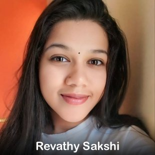
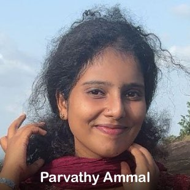
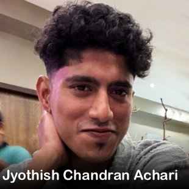

TABINAK - The Home of Rebirth
TABINAK - എന്ന വാക്കിന് അർത്ഥം ക്ഷേത്രം എന്നാണ്. ശാന്തി, സമാധാനം, സന്തോഷം, ഉയർച്ച എന്നിവ ജീവിതത്തിൽ ഉണ്ടാകുവാനായാണ് ക്ഷേത്ര സന്നിധിയിൽ എത്തുന്നത്. ഹൃദയത്തിൽ കുന്നുകൂടി കിടക്കുന്ന ഭാരങ്ങൾ മനസ്സിൽ നിന്ന് ഇറക്കി വച്ച് ഹൃദയം ശാന്തമാകുവാൻ, ഒരു പുനർജ്ജന്മം ലഭ്യമാകുവാൻ ക്ഷേത്രദർശനം സഹായകരമാകുന്നു. പഞ്ചേന്ദ്രിയങ്ങൾ ശുദ്ധമായി ഉള്ളിൽ തികഞ്ഞ സമാധാനം നിറയ്ക്കുവാൻ ക്ഷേത്രത്തെ പോലൊരു മറ്റൊരു സ്ഥലമില്ല.
ഇവിടെ TABINAK ചെയ്യുന്നതും ഇത് തന്നെയാണ്. ജീവിതത്തിൽ കുന്നുകൂടി കിടക്കുന്ന വേദനകൾ, ഭാരങ്ങൾ, പ്രശ്നങ്ങൾ, മനസ്സിന്റെ ക്ഷീണവസ്ഥകൾ, പതറിപോകുന്ന അവസ്ഥകൾ, മുന്നോട്ടു എങ്ങനെ എന്നറിയാതെ കിടക്കുന്ന നിമിഷങ്ങൾ എന്നിവയൊക്കെയും ഇവിടെ സുഖപ്പെടുത്തുകയും ഒരു പുതുജന്മം കൈവരിക്കാൻ സഹായിക്കുകയും ചെയ്യുന്നു.
TABANIK ഒരു കുടുംബമാണ്. സന്തോഷവും സമാധാനവും ആത്മീയതയും ഇടവിടാതെ ആസ്വദിക്കുന്ന ഒരു കൂട്ടം നന്മ മനോഭാവമുള്ള വ്യക്തികൾ ഒരുമിച്ചു ജീവിക്കുന്ന കുടുംബം. ഇവിടെ ആരും ആരുടേയും കുറവുകളെയോ, കുറ്റങ്ങളെയോ കുറിച്ച് ചിന്തിക്കുന്നില്ല, സംസാരിക്കുന്നുമില്ല. ജീവിതത്തിൽ പകച്ചു നിൽക്കുന്നവരെ തിരികെ ജീവിതത്തിലേക്ക് കൈപിടിച്ച് കയറ്റാനായി ആഗ്രഹിക്കുന്ന ഒരു കുടുംബമാണ് TABINAK
ഇവിടെ ശാരീരികമായും, മാനസികമായും,ആത്മീയമായും, വൈകാരികമായും പുനർജ്ജീവനം നടത്തുന്ന കുടുംബ സംഗമം ആണ് സംഭവിക്കുന്നത്. TABINAK-ലേക്ക് ഒരു വ്യക്തി കടന്നു വരുമ്പോൾ ഈ കുടുംബത്തിന്റെ അംഗമാവുകയും ആ വ്യക്തിയിൽ ജീവിതത്തിന്റെ പുതിയ വെളിച്ചത്തിന്റെ ലോകം തുറന്നു കൊടുക്കുകയും ചെയ്യുന്നു. ഒരു കുടുംബം മുഴുവനും ആ വ്യക്തിയുടെ പ്രശ്നം കേൾക്കുകയും, അതിനു പരിഹാരം പകർന്നു നൽകാൻ തയ്യാറെടുക്കുകയും ചെയ്യുന്നു. കൂടാതെ ശരീരവും മനസ്സും വൈകാരിക മണ്ഡലവും ആത്മാവും ചേർന്ന് ഒരു പുതിയ ജീവിതത്തിലേക്ക് നടക്കാനുള്ള രഹസ്യം നിങ്ങൾക്കായി തുറന്നു തരികയും ചെയ്യുന്നു.
*രാവിലെ 8 മണിക്ക് TABANIK - ലേക്ക് കയറുന്ന വ്യക്തിക്ക് ധൈര്യമായി ഒരു സുരക്ഷിത കുടുംബത്തിലേക്ക് കയറുന്നു എന്നുള്ള ആത്മവിശ്വാസത്തിൽ കയറാം.
*പ്രഭാത ഭക്ഷണം മുതൽ അത്താഴം വരെ ഒരു ദിവസത്തെ Rebirth Session ൽ ലഭിക്കുന്നു.
*ഒരുമിച്ചു പാചകത്തിലും മറ്റു പല ആക്ടിവിറ്റിയിലും പങ്കുചേരാം.
*മെഡിറ്റേഷൻ, പഞ്ചേന്ദ്രിയ സേവ, Fun & Music with Family , One to One Self Realization Session തുടങ്ങി ഒരുപാട് ഘട്ടങ്ങളിലൂടെ REBIRTH session കടന്നുപോകുന്നു.
Note :-
No Artificial Foods
No Refined Oil
No Heavy Masala
No Alcohol
No Smoking
No Carbonated Drinks
No Processed Sugar
No Negative Talk
No Mobile Phones in Sessions
Dakshina:
One Day Session: ₹1999/-
8.00AM - 7.00PM
[BREAKFAST, REFRESH TEA, LUNCH, EVENING TEA, DINNER + 𝗧𝗔𝗕𝗜𝗡𝗔𝗞 𝗥𝗘𝗕𝗜𝗥𝗧𝗛 𝗦𝗘𝗦𝗦𝗜𝗢𝗡]
• Hearing
• Interaction
• Survery
• Soul Opening Meditation
• Soul Filling Session
• Inner Healing
• Life Plan Chart Making
• Inner Cleansing Meditation
One and Half Day Session: ₹2699/-
8.00 AM - NEXT DAY 11.00 AM
[BREAKFAST, REFRESH TEA, LUNCH, EVENING TEA, DINNER + ACCOMMODATION + 𝗧𝗔𝗕𝗜𝗡𝗔𝗞 𝗥𝗘𝗕𝗜𝗥𝗧𝗛 𝗦𝗘𝗦𝗦𝗜𝗢𝗡]
• Hearing
• Interaction
• Survery
• Soul Opening Meditation
• Soul Filling Session
• Inner Healing
• Life Plan Chart Making
• Outdoor Meditation
• Nava Seva Sathra
• Mindfulness Awareness Session
Two Day Full Session: ₹3999/-
8.00AM - NEXT DAY 7.00PM
[BREAKFAST, REFRESH TEA, LUNCH, EVENING TEA, DINNER + ACCOMMODATION + 𝗧𝗔𝗕𝗜𝗡𝗔𝗞 𝗥𝗘𝗕𝗜𝗥𝗧𝗛 𝗦𝗘𝗦𝗦𝗜𝗢𝗡]
• Hearing
• Interaction
• Survery
• Soul Opening Meditation
• Soul Filling Session
• Inner Healing
• Life Plan Chart Making
• Outdoor Meditation
• Nava Seva Sathra
• Mindfulness Awareness Session
• Soul Therapy
• Mirror Neurons Reactivation
• Panchabhootha Seva
Three Day Full Session: ₹7999/-
8.00AM - 3ᵗʰ DAY 7.00PM
[BREAKFAST, REFRESH TEA, LUNCH, EVENING TEA, DINNER + ACCOMMODATION + 𝗧𝗔𝗕𝗜𝗡𝗔𝗞 𝗥𝗘𝗕𝗜𝗥𝗧𝗛 𝗦𝗘𝗦𝗦𝗜𝗢𝗡]
• Hearing
• Interaction
• Survery
• Soul Opening Meditation
• Soul Filling Session
• Inner Healing
• Life Plan Chart Making
• Outdoor Meditation
• Nava Seva Sathra
• Mindfulness Awareness Session
• Soul Therapy
• Mirror Neurons Reactivation
• Panchabhootha Seva
• Mind Detoxification
• Emotional Purification
• Inner Awareness
Five Days Session: ₹14999/-
8.00 AM - 5ᵗʰ DAY 7.00 PM
[BREAKFAST, REFRESH TEA, LUNCH, EVENING TEA, DINNER + ACCOMMODATION + 𝗧𝗔𝗕𝗜𝗡𝗔𝗞 𝗥𝗘𝗕𝗜𝗥𝗧𝗛 𝗦𝗘𝗦𝗦𝗜𝗢𝗡 + 𝗦𝗣𝗘𝗖𝗜𝗔𝗟 𝗥𝗘𝗕𝗜𝗥𝗧𝗛 𝗦𝗘𝗦𝗦𝗜𝗢𝗡]
• Hearing
• Interaction
• Survery
• Soul Opening Meditation
• Soul Filling Session
• Inner Healing
• Life Plan Chart Making
• Outdoor Meditation
• Nava Seva Sathra
• Mindfulness Awareness Session
• Soul Therapy
• Mirror Neurons Reactivation
• Panchabhootha Seva
• Panchendriya Seva
• Water Therapy
• Sound Healing
• Forehead Therapy
• Light of hopes
• Blind therapy
• Gratitude session
Pay the Dakshina to 8304008929 & Send the Payment Details / Screenshot to iamakalakamalmahal@gmail.com
Healers
  Reviews
Excellent Training
തബീനക്ക് കുടുംബത്തിലെ ഓരോരുത്തർക്കും ഹൃദയം നിറഞ്ഞ നന്ദി അറിയിക്കുന്നു. എന്റെ പേര് സുരേഷ് ,ഞാനും ഭാര്യയും മകളും തബീനക്ക് ഹീലിങ് പ്രോഗ്രാമിൽ പങ്കെടുത്തു.ഒരുപാട് ആശയക്കുഴപ്പത്തോടുകൂടിയാണ് ഞങ്ങൾ ഹീലിങ് പ്രോഗ്രാമിൽ പങ്കെടുത്തത്. കഴിഞ്ഞുപോയതിനെ കുറിച്ചും ഭാവിയെക്കുറിച്ചും ചിന്തിച്ച് മനസ് വല്ലാതെ അസ്വസ്ഥമായിരുന്നു. ഹീലിങ് പ്രോഗ്രാമിൽ പങ്കെടുത്തതിനു ശേഷം മനസിലെ ആകുലതകൾക്ക് മുഴുവൻ ആശ്വാസം ലഭിച്ചു .ഹീലിങ് കഴിഞ്ഞപ്പോൾ ഉളിലെ ഭയം, ദേഷ്യം,വെറുപ്പ് ,നിരാശ ,വിഷാദം എന്നീ നെഗറ്റീവ് ചിന്തകൾ അലിഞ്ഞുപോയി. പുതിയ പ്രതീക്ഷകൾക്ക് തിരികൊളുത്തിയിട്ടാണ് ഞങൾ അവിടെനിന്നും വന്നത്. ദൈവം നമ്മളോരുരുത്തരെയും ഭൂമിയിൽ ജന്മം തന്നതിന് വ്യക്തമായ കാരണം ഉണ്ട് . നമ്മുടെ ഉള്ളിൽ തന്നെ കുടികൊള്ളുന്ന ഈശ്വരചൈതന്യത്തെ തിരിച്ചറിയാൻ സാധിച്ചു. ഭൂമിൽ ദൈവം നമുക്ക് തന്നിരിക്കുന്ന എല്ലാ സൗഭാഗ്യങ്ങൾക്കും നന്ദി പറയുന്നു .കൂടാതെ വളരെ കുറഞ്ഞ ചിലവിൽ രണ്ടുദിവസം ഞങ്ങൾക്ക് എല്ലാസുഖ സൗകര്യങ്ങളും ഒരുക്കിത്തന്ന കലാ കമൽ മാഡത്തിനും കുടുബത്തിലെ എല്ലാവര്ക്കും ഒരായിരം നന്ദി രേഖപ്പെടുത്തുന്നു ..